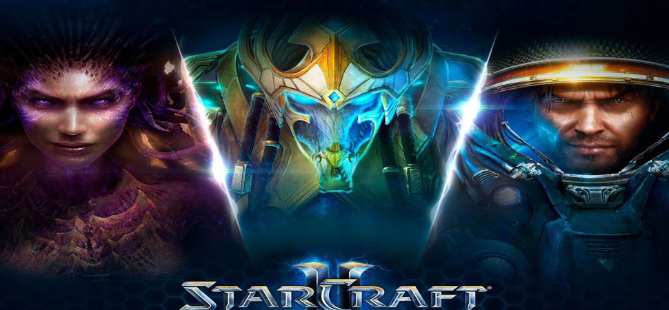
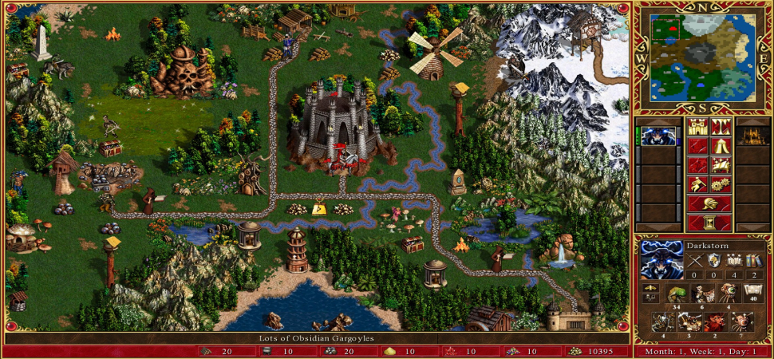
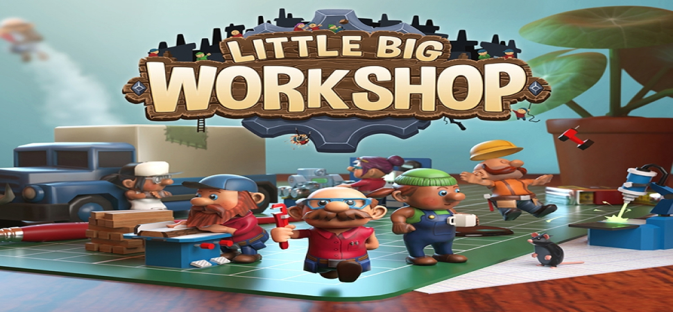
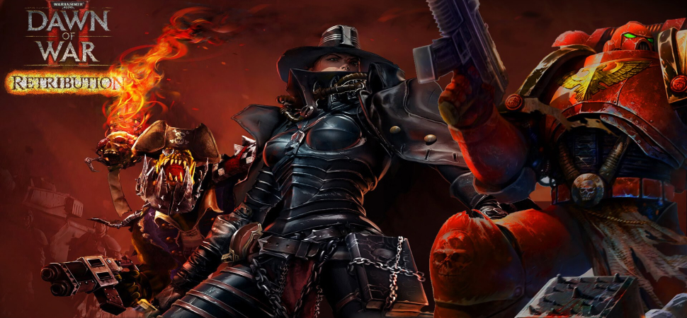
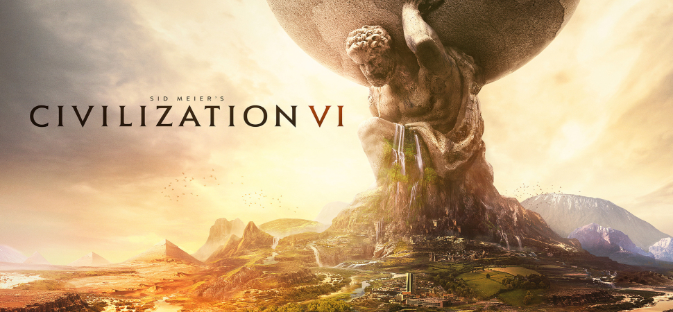

 Стратегии реального времени Starcraft 2 считается лучшей игрой в жанре стратегии реального времени благодаря глубокой стратегической геймплейной механике, балансу между тремя уникальными расами, высокому уровню соревновательности, разнообразию тактических возможностей и возможности создания собственных карт и режимов игры.
 Пошаговые стратегии Heroes of Might and Magic 3 считается лучшей игрой в жанре пошаговых стратегий благодаря увлекательному геймплею, глубокой стратегической составляющей, разнообразию рас и юнитов, интересным сюжетом, возможности создания своих карт и скриптов, а также долговечной популярности среди игроков и критиков.
 Экономические симуляторы Little Big Workshop является одной из лучших игр в жанре экономических симуляторов благодаря своей простоте и глубине игрового процесса, красочной графике, возможности управления собственным фабричным бизнесом, а также широким спектром предметов, которые можно производить и продавать.
 Варгеймы Warhammer 40,000: Dawn of War II является лучшей игрой в жанре Варгеймы из-за уникальной системы управления отрядом, динамичных боевых сражений, глубокой стратегической составляющей и разнообразных миссий, которые поддерживают интерес игрока на протяжении всей игры. Кроме того, игра имеет отличную графику, атмосферное звуковое оформление и богатую вселенную Warhammer 40,000.
 Глобальные стратегии Civilization VI является лучшей игрой в жанре Глобальные стратегии благодаря глубокой и продуманной игровой механике, возможности создания уникальных стратегий, разнообразию цивилизаций и лидеров, а также исторической атмосфере, которая погружает игрока в мир пошагового развития цивилизации. Кроме того, постоянные обновления и дополнения поддерживают интерес игроков на протяжении многих часов игрового времени.